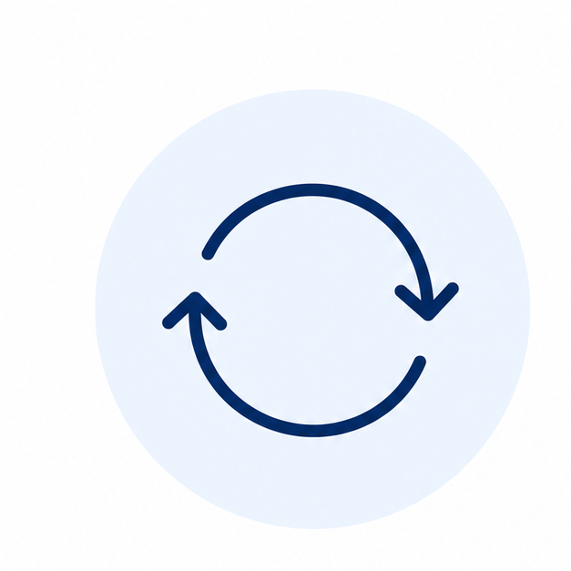
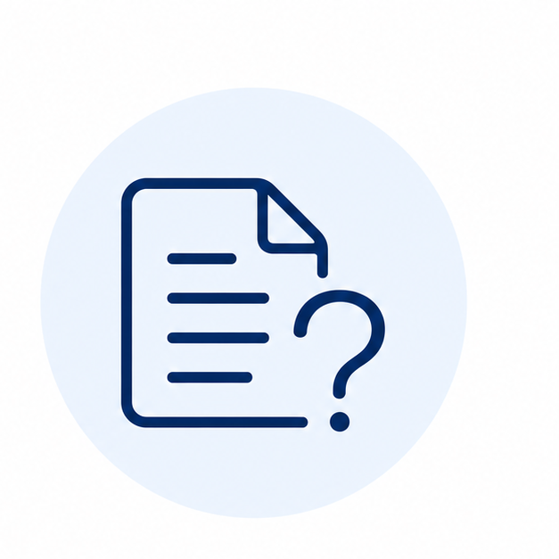
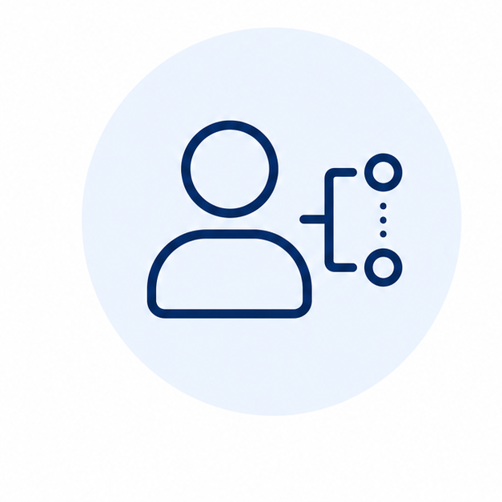
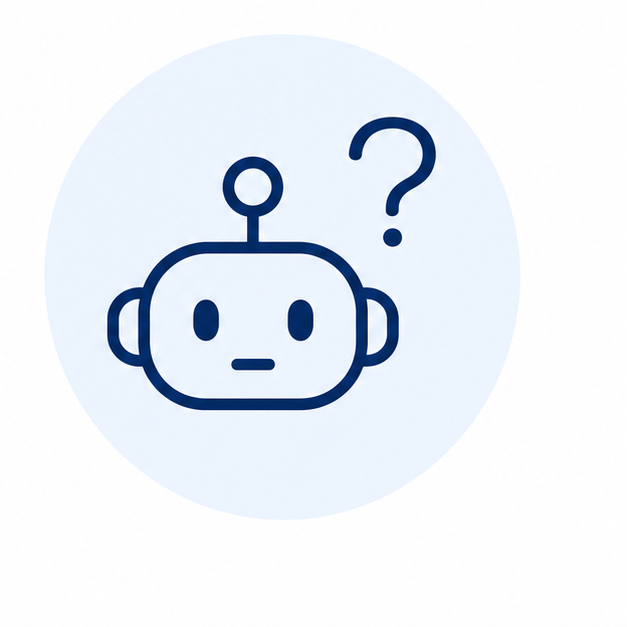

同じ説明を
何度もしている
毎回の説明に時間が取られ、本来の業務に集中できない。

毎回の説明に時間が取られ、本来の業務に集中できない。

情報が散在し、探しにくく、すぐに見つからない。

属人化してしまい、不在時に業務が止まる。

何から手をつければよいかわからず、進められない。
AI秘書 琥珀は、社内外に散らばる知識を整理し、必要なときにすぐ答えてくれる仕組みをつくります。
資料や情報を集め、使いやすく整理します。
AIに学習させ、質問に答えられるようにします。
実際の利用を通じて改善し、賢く成長させていきます。
まずは実際に触って確認
画面内のチャットに質問すると、専用AI秘書がどのように答えるのかを確認できます。導入前に、社内ナレッジや顧客対応で使うイメージをつかんでください。
業種や業務に合わせて、目的に最適なAI秘書をオーダーメイドで設計します。
既存の資料・マニュアル・FAQをそのまま活かして、学習データとして利用します。
社内利用はもちろん、クライアント向けQ&Aボットとしての提供も可能です。
構築後の改善提案や活用支援まで伴走し、成果が出るまでサポートします。
課題や目的を丁寧にヒアリングします。
利用シーンを整理し、最適な設計を行います。
資料を分類・構造化し、学習しやすく整えます。
AIを設定・学習させ、専用秘書を構築します。
テスト運用で精度を検証し、精度を高めます。
運用ルールや改善体制を整え、定着を支援します。
わからないことはいつでも気軽に質問・相談できます。
定期的に利用状況を確認し、改善点をご提案します。
他の利用者の事例や使い方を共有し、活用の幅を広げます。
導入後も継続的にサポートし、成果向上を支援します。
「質問対応の時間が大幅に減り、本来の仕事に集中できるようになりました。」
「顧客からのよくある質問にすぐ答えられるようになり、サポート品質が安定しました。」
「社内のマニュアルやルールをまとめてくれて、新人教育の負担が減りました。」
はい。まずはどんな情報をAI秘書に覚えさせるとよいか、整理するところから一緒に進められます。
はい。社内ナレッジ検索、顧客向けQ&A、サービス説明、サポート窓口など、用途に合わせて設計できます。
専門知識がなくても扱いやすい形を目指します。構築後の更新や改善の進め方もサポートします。
扱う資料や公開範囲を確認しながら、用途に合わせた安全な運用方法を一緒に設計します。
AI導入支援・ナレッジ整理・業務効率化を専門としています。中小企業や個人事業主の方が、無理なくAIを活用できるよう伴走支援します。